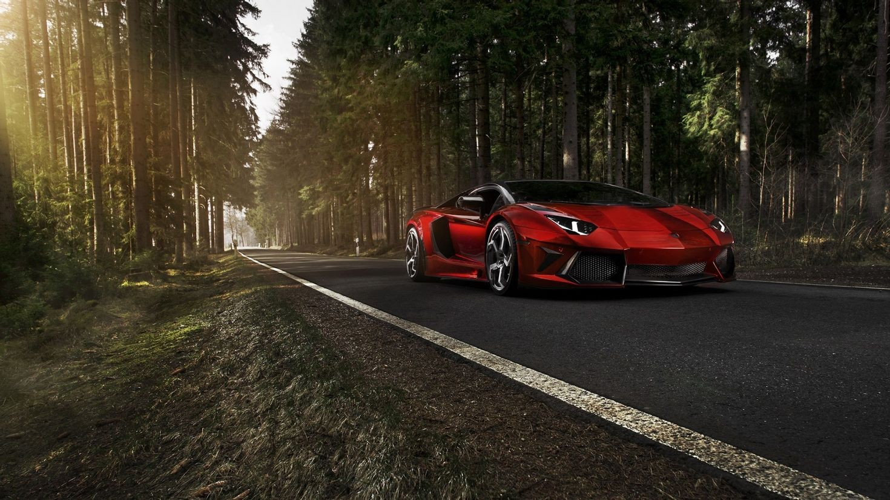

Lamborghini
2022 ItalyAventador
The Aventador S expresses unmistakable Lamborghini DNA, adding even more dynamism, refinement and aggressiveness through its finely honed features. The hexagonal design of the new exhaust pipes evoke the power of the space shuttle; the front end is shaped to resemble a shark, conveying the same strength and elegance in dominating its own environment: the road. Each and every surface of the Aventador S is designed for maximum power, taking performance to previously unheard-of levels.
Gallardo
The interior of the Revuelto brings the “Feel Like a Pilot” concept to its utmost expression: simple volumes, symmetry, and a driver-focused approach make the cockpit an empowering station for the driver. The futuristic environment creates a seamless connection between driver and machine, while exclusive hexagon-shaped elements fulfill the dual mission of evoking past models and highlighting brand-new functional features.
Huracan Sterrato
The Huracán Sterrato has an adventurous spirit that mesmerizes the moment you set eyes on it. Every detail is a statement of its daring attitude: it is 44 mm higher than the Huracán EVO to ensure greater suspension travel, and the track width has also been increased. The iconic air intake on the rear hood accentuates the car’s sporty, audacious character. The front underbody protection, sills and wheel arches emphasize the car’s muscular stance.